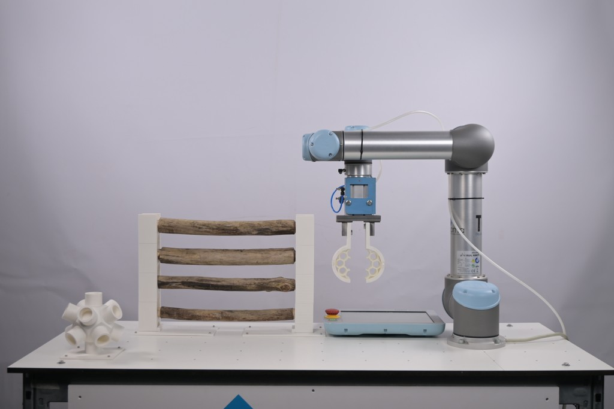
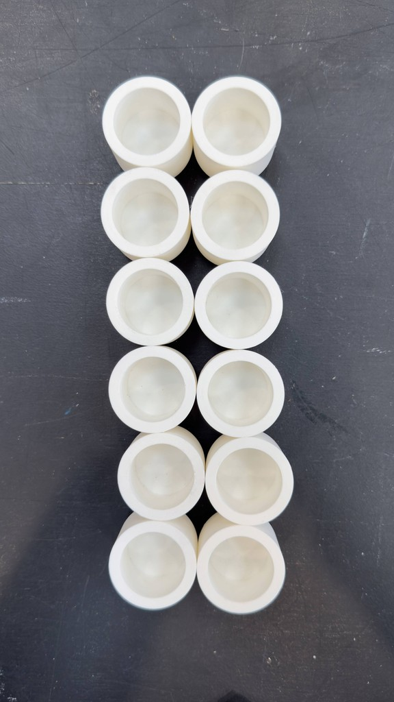
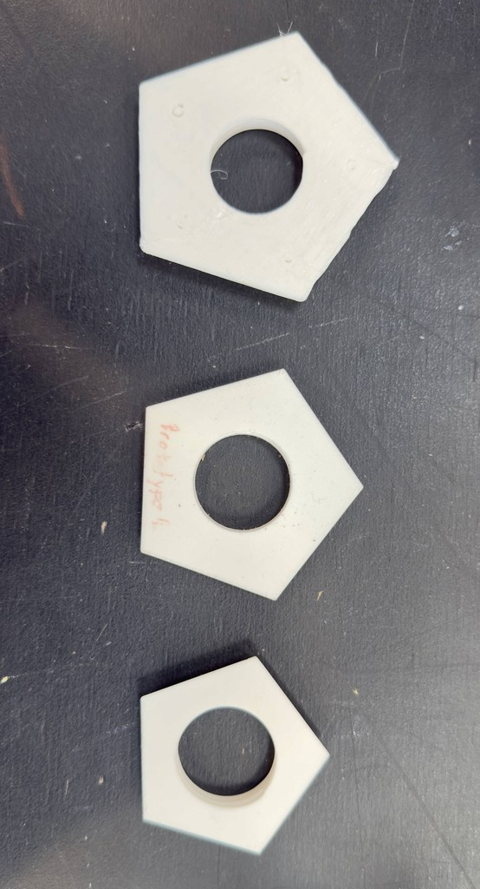
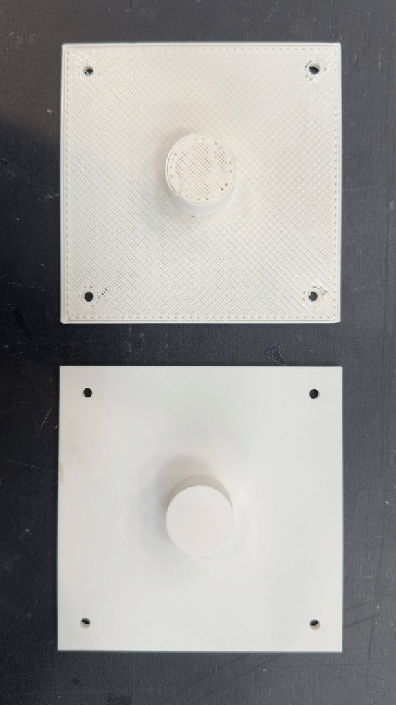
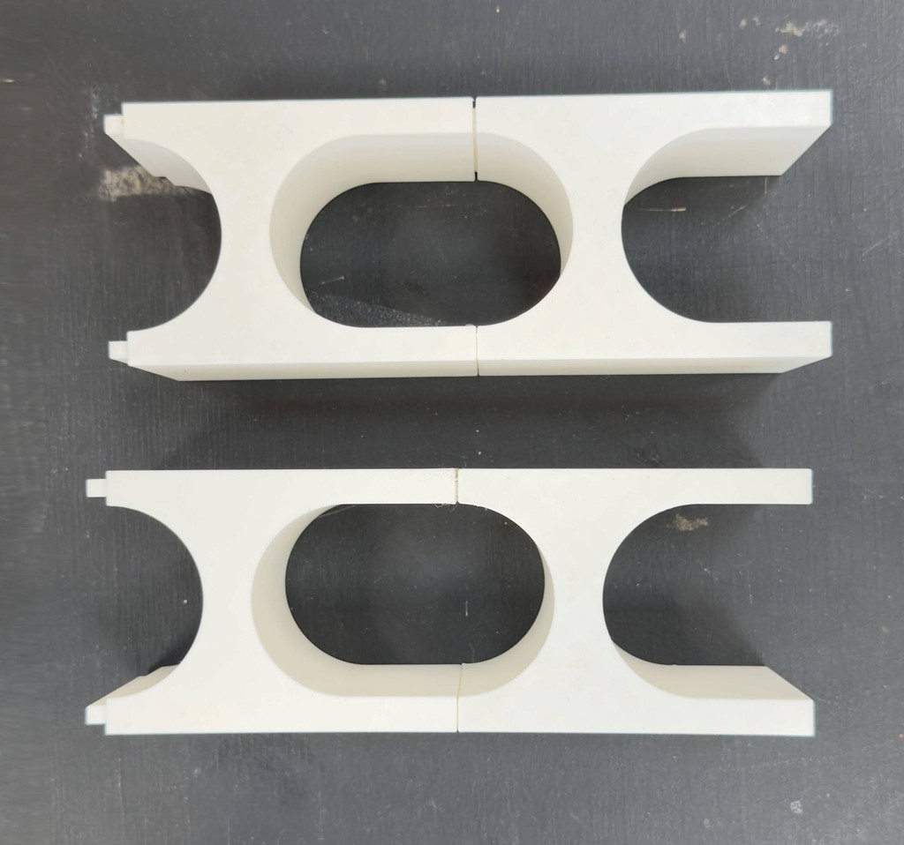
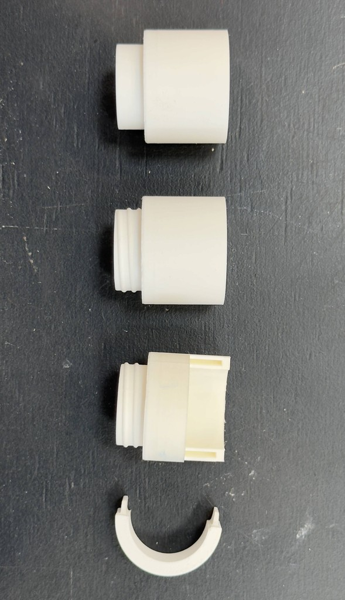
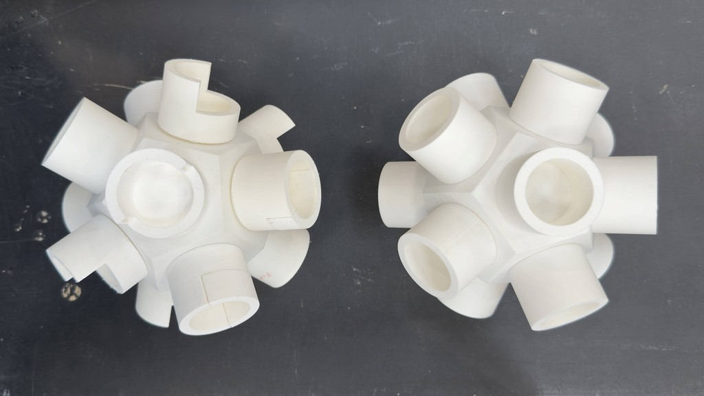
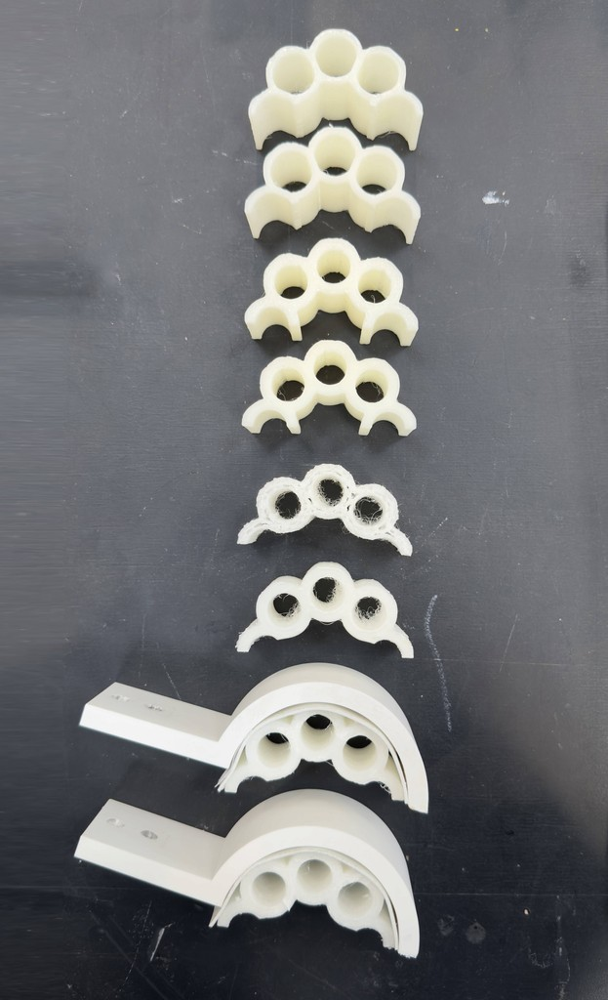
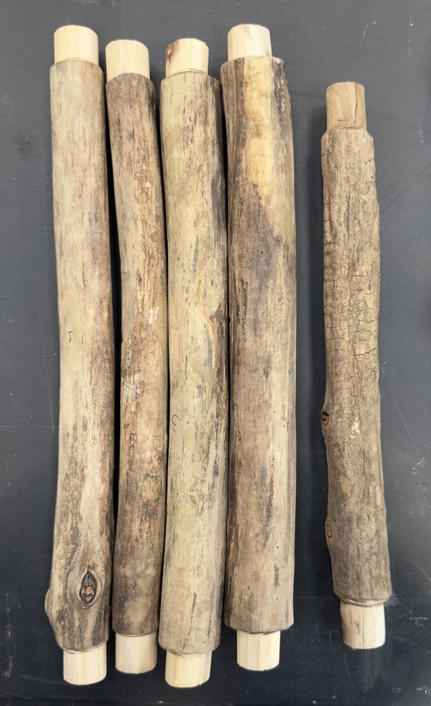
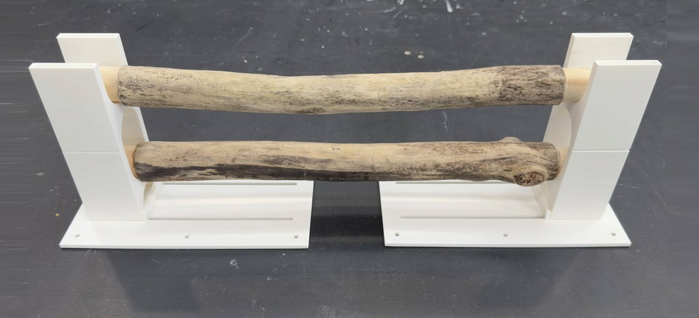

Discrete Sight is a biomimetic bird hide developed along the East Atlantic Flyway in Wassenaar, designed to observe the Black-tailed Godwit with minimal disturbance to its migratory wetland habitat. Rather than building with a fixed structural system, the project explores a discrete assembly approach: the hide is built up from separate, robotically placed elements made from reclaimed, locally sourced wood. Custom end-connectors and a robotic arm workflow allow these discrete parts to be assembled into a complex, freeform structure with minimal manual labour, while the resulting shape blends into its surroundings to keep the visitor experience unobtrusive for the birds.
Tools:
Rhino, Grasshopper, Universal Robots UR5, Robots Plugin, LiDAR, Photogrammetry, Unreal Engine RealityScan, BAMBU Lab studio, Bambu Lab X1 Carbon (FDM printer), Miro, Figma
Collaborators:
Hari Krishnan Subramaniyan, Loïc Chabus, Yannick Huisinga
Full Project









